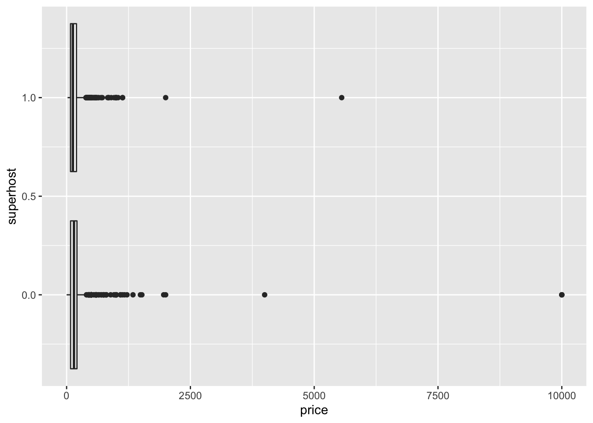
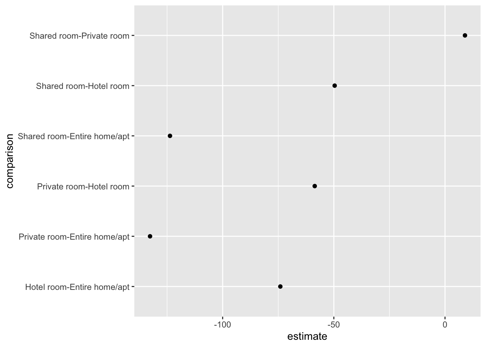
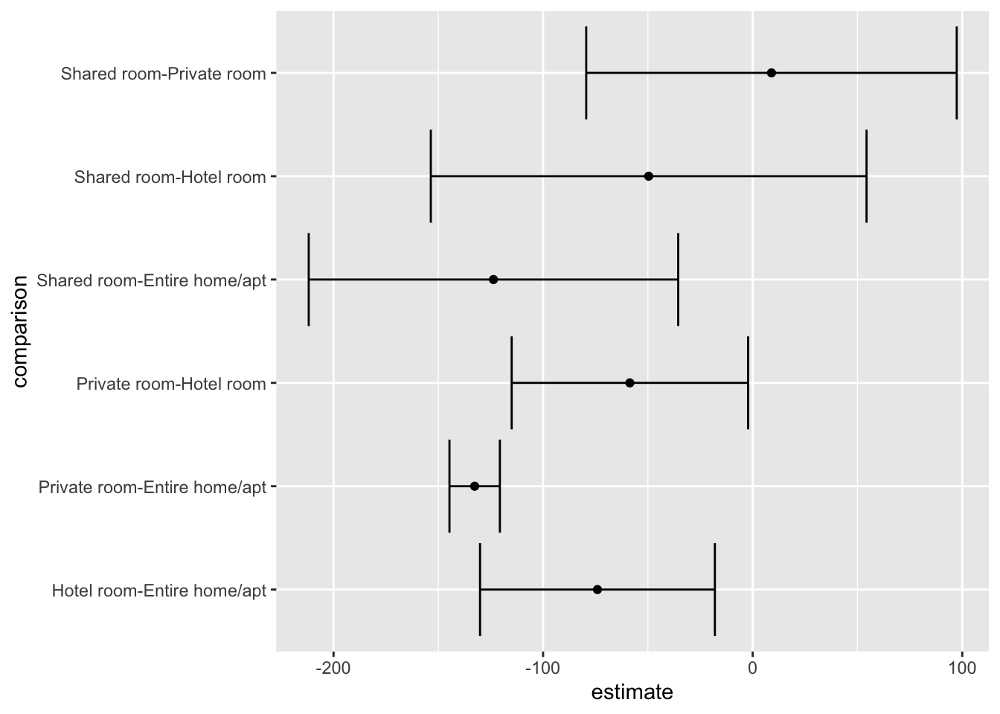

Chapter 25 Statistics
In the course of your analyses you will both want to and need to conduct statistical tests. It is important that you are equipped to perform these tests in R as well. Teaching you statistical concepts is outside of the scope of this book. For an introduction to statistical concepts using R, I recommend reading David Dalpiaz’s free and open R for Statistical Learning73. In this section we will review how to implement statistical tests and extract useful information from them as well. We will cover t-tests, ANOVA, and linear regression.
To explore these statistics we will use data from Inside Airbnb. Of interest is the relationship between price and superhosts, price and room type, and finally how both superhosts and room type contribute to price.
25.1 The data
We will use data from both the hosts and listings datasets. The former contains superhost data while the later has both the price and room type information. First we will read in both of these datasets.
library(tidyverse)
listings <- read_csv("data/airbnb/listings.csv")
hosts <- read_csv("data/airbnb/hosts.csv")
glimpse(listings)## Rows: 3,799
## Columns: 7
## $ id <dbl> 3781, 5506, 6695, 8789, 10730, 10813, 10986, 16384, …
## $ neighborhood <chr> "East Boston", "Roxbury", "Roxbury", "Downtown", "Do…
## $ room_type <chr> "Entire home/apt", "Entire home/apt", "Entire home/a…
## $ price <dbl> 125, 145, 169, 99, 150, 179, 125, 50, 154, 115, 148,…
## $ minimum_nights <dbl> 28, 3, 3, 91, 91, 91, 91, 91, 29, 1, 2, 2, 2, 6, 3, …
## $ availability_365 <dbl> 68, 322, 274, 247, 29, 0, 364, 365, 304, 285, 62, 24…
## $ host_id <dbl> 4804, 8229, 8229, 26988, 26988, 38997, 38997, 23078,…## Rows: 1,335
## Columns: 9
## $ id <dbl> 4804, 8229, 26988, 38997, 23078, 71783, 85130, 85770,…
## $ name <chr> "Frank", "Terry", "Anne", "Michelle", "Eric", "Lance"…
## $ since_year <dbl> 2008, 2009, 2009, 2009, 2009, 2010, 2010, 2010, 2010,…
## $ since_month <chr> "12", "02", "07", "09", "06", "01", "02", "02", "03",…
## $ since_day <chr> "03", "19", "22", "16", "24", "19", "24", "26", "23",…
## $ response_rate <chr> "100%", "100%", "100%", "92%", "50%", "98%", "66%", "…
## $ acceptance_rate <chr> "50%", "100%", "84%", "17%", "N/A", "98%", "97%", "10…
## $ superhost <dbl> 1, 1, 1, 0, 0, 0, 0, 0, 0, 0, 0, 1, 0, 0, 0, 0, 0, 1,…
## $ n_listings <dbl> 5, 2, 9, 13, 3, 40, 7, 4, 1, 2, 1, 1, 5, 1, 1, 1, 1, …In order to join these two tibbles together we need to figure out what the common identifiers are. In listings we can infer that the primary key is id while the foreign key is host_id. While the hosts tibble only has one id column. Clearly the join needs to be between host_id and id from listings and hosts respectively. We will perform a left join then select the columns price, room_type and superhost and assign that to the object airbnb.
airbnb <- left_join(listings, hosts, by = c("host_id" = "id")) %>%
select(price, room_type, superhost)
glimpse(airbnb)## Rows: 3,799
## Columns: 3
## $ price <dbl> 125, 145, 169, 99, 150, 179, 125, 50, 154, 115, 148, 275, 2…
## $ room_type <chr> "Entire home/apt", "Entire home/apt", "Entire home/apt", "E…
## $ superhost <dbl> 1, 1, 1, 1, 1, 0, 0, 0, 0, 0, 0, 0, 0, 0, 1, 0, 1, 0, 0, 0,…Before we can engage in any statistical testing we should do our due diligence and first visualize the relationship before we test it. Because we are comparing a group to a continuous variable a boxplot will suffice.

Note that we are setting the group to
superhostthis is because it is dummy coded as a numeric value. ggplot is attempting to consider it numeric rather than categorical.
Clearly there are some noticeable outliers above the $2,500 mark. Let’s filter out these values before we get on to our testing and while we’re at it, let’s convert superhost to a factor with factor(). Save the the filtered results to bnb_filt. Recreate the above visualization with the new object.
bnb_filt <- filter(airbnb, price < 2500) %>%
mutate(superhost = factor(superhost))
ggplot(bnb_filt, aes(price, superhost)) +
geom_boxplot()The first thing you may notices is that we no longer had to specify the group aesthetic because we converted superhost to a non-numeric format. From the above visualization it looks like that being a superhost does not necessarily increase the price of a listing. We can now test these means by using t.test(). There are a number of ways in which we can use this function but the most generalizable way is to use what is called the formula interface.
25.2 The formula interface
The formula interface is a way of defining statistical formulae. Or maybe a bit more clearly it let’s us tell R which columns to use when fitting a model74. The general format it takes is y ~ x which reads y as a function of x. In the case of a t-test the y is the variable that we will be testing the means of and the x is what group to compare. If our data are already in a tidy format—like our Airbnb data—this will be rather easy to adhere to.
25.3 T-tests
To perform a t-test we will use the t.test() function with the arguments formula and data. An example call looks like t.test(y ~ x, data = df). In our case our y is price because it is our variable of interest or our dependent variable. Since we are curious how price changes by superhost status, we will put superhost in the x spot.
Conduct a t-test and store the results in price_t. Print it out afterwards.
##
## Welch Two Sample t-test
##
## data: price by superhost
## t = 2.3261, df = 2029.4, p-value = 0.02011
## alternative hypothesis: true difference in means is not equal to 0
## 95 percent confidence interval:
## 1.949967 22.904491
## sample estimates:
## mean in group 0 mean in group 1
## 175.1989 162.7717The above is a somewhat cluttered buch of numbers and words. But in there we can see our t-value (t = 2.3261), degrees of freedom (df = 2029.4), and our p-value (p-value = 0.02011). From this test we can tell that with an alpha level of 0.05 we can reject the null hypothesis.
25.3.1 Tidying up after our models
While this is useful, we’re going to, at some point, want to extract these statistics in some usable format. Enter broom. From the documentation:
"
broomsummarizes key information about models in tidy tibble()s. broom provides three verbs to make it convenient to interact with model objects.
- tidy() summarizes information about model components
- glance() reports information about the entire model
- augment() adds informations about observations to a dataset75
Make sure that broom is installed with install.packages("broom"). Once that is installed use the function tidy() on the price_t object,
## # A tibble: 1 x 10
## estimate estimate1 estimate2 statistic p.value parameter conf.low conf.high
## <dbl> <dbl> <dbl> <dbl> <dbl> <dbl> <dbl> <dbl>
## 1 12.4 175. 163. 2.33 0.0201 2029. 1.95 22.9
## # … with 2 more variables: method <chr>, alternative <chr>The result is a tibble that can be easily manipulated and worked with. But naturally we will want to explore beyond just two groups. And in that case we must perform an analysis of variance (ANOVA).
25.4 ANOVA
The ANOVA test is used in the case when t-tests cannot. That is, they are used when we want to know if there is a difference in means between groups when there are two or more groups. To perform an ANOVA we use the aov() function—an initialism for aanalysis of variance—with the same arguments that we used in t.test(). The only difference here is that the x is a column that has more than two groups—room_type. We can fit the ANOVA model with price as our y and room_type as our x.
## Call:
## aov(formula = price ~ room_type, data = bnb_filt)
##
## Terms:
## room_type Residuals
## Sum of Squares 15152015 70853604
## Deg. of Freedom 3 3789
##
## Residual standard error: 136.7473
## Estimated effects may be unbalancedWhen we print out the ANOVA model object we actually don’t see the results we were anticipating. To get thos we have to pass the model object to the function summary().
## Df Sum Sq Mean Sq F value Pr(>F)
## room_type 3 15152015 5050672 270.1 <2e-16 ***
## Residuals 3789 70853604 18700
## ---
## Signif. codes: 0 '***' 0.001 '**' 0.01 '*' 0.05 '.' 0.1 ' ' 1Now here we find the results of our test: p < 0.001. You may notice already that there is some inconsistency in which that ways that models are interacted with. That is why we use broom, to have one common way of working with model objects. If we’d like to access the model results in a consistent way we can again use broom::tidy().
## # A tibble: 2 x 6
## term df sumsq meansq statistic p.value
## <chr> <dbl> <dbl> <dbl> <dbl> <dbl>
## 1 room_type 3 15152015. 5050672. 270. 7.32e-159
## 2 Residuals 3789 70853604. 18700. NA NARemember though that ANOVA tests if there is any variation between any two groups. The results of the test do not tell us which groups are different. And this is when we turn to Tukey’s Honestly Significant Difference (HSD). Tukey’s HSD creates a set of confidence intervals to compare each unique combination of our variables. To perform the test in R we pass the ANOVA model object to the function TukeyHSD()
## Tukey multiple comparisons of means
## 95% family-wise confidence level
##
## Fit: aov(formula = price ~ room_type, data = bnb_filt)
##
## $room_type
## diff lwr upr p adj
## Hotel room-Entire home/apt -74.062500 -130.09198 -18.033019 0.0038353
## Private room-Entire home/apt -132.658355 -144.68495 -120.631764 0.0000000
## Shared room-Entire home/apt -123.687500 -211.84397 -35.531026 0.0017890
## Private room-Hotel room -58.595855 -115.00228 -2.189435 0.0381673
## Shared room-Hotel room -49.625000 -153.58946 54.339462 0.6097851
## Shared room-Private room 8.970855 -79.42567 97.367379 0.9937854The results of the above test show that there are rather significant difference between hotel rooms and entire homes or apartments, private rooms and entire homes, shared rooms and entire homes, as well as private room and hotel room. With the use of broom and ggplot we can begin to visualize these restuls.
## # A tibble: 6 x 6
## term comparison estimate conf.low conf.high adj.p.value
## <chr> <chr> <dbl> <dbl> <dbl> <dbl>
## 1 room_type Hotel room-Entire home/apt -74.1 -130. -18.0 3.84e-3
## 2 room_type Private room-Entire home/apt -133. -145. -121. 1.38e-8
## 3 room_type Shared room-Entire home/apt -124. -212. -35.5 1.79e-3
## 4 room_type Private room-Hotel room -58.6 -115. -2.19 3.82e-2
## 5 room_type Shared room-Hotel room -49.6 -154. 54.3 6.10e-1
## 6 room_type Shared room-Private room 8.97 -79.4 97.4 9.94e-1With the tidied HSD object we can create a graph of point estimates and error bars.
I personally like to call these Tie Fighter plots because they resemble the space ships from Star Wars.
We can being by plotting the point estimates of each comparison.

Next we can add a horizontal error bar (geom_errorbarh()) layer to the plot. This layer requires some additional aesthetics that we will set in the layer itself. These are xmin and xmax. Respectively they are used to mark the minimum and maximum extents of the error bars. In the case of the HSD object, the bounds of th confidence intervals have been already calculated for us and can be found in the columns conf.low and conf.high. We can pass these to the xmin and xmax aesthetic arguments.

25.5 Linear regression
When we want to move on to inference with linear models, we turn to the lm() function. This, like the t.test() and aov() functions requires both a formula and data. The difference is that the formulas that we will use are a bit more complex because we will often be using many variables. To predict y as some function of multiple inputs we have to declare all of those inputs in our formula which takes form of y ~ x1 + x2 + .... So if we were to create a linear model that predicts price as a function of room type and whether or the host is a superhost, our formula will look like price ~ room_type + superhost.
##
## Call:
## lm(formula = price ~ room_type + superhost, data = bnb_filt)
##
## Residuals:
## Min 1Q Median 3Q Max
## -219.01 -64.01 -26.01 20.99 1780.99
##
## Coefficients:
## Estimate Std. Error t value Pr(>|t|)
## (Intercept) 219.0073 3.0450 71.925 < 2e-16 ***
## room_typeHotel room -74.3532 21.8938 -3.396 0.000691 ***
## room_typePrivate room -132.7222 4.7004 -28.237 < 2e-16 ***
## room_typeShared room -123.5526 34.3168 -3.600 0.000322 ***
## superhost1 0.7244 4.9720 0.146 0.884172
## ---
## Signif. codes: 0 '***' 0.001 '**' 0.01 '*' 0.05 '.' 0.1 ' ' 1
##
## Residual standard error: 136.8 on 3788 degrees of freedom
## Multiple R-squared: 0.1762, Adjusted R-squared: 0.1753
## F-statistic: 202.5 on 4 and 3788 DF, p-value: < 2.2e-16The output of this is very similar to that of the ANOVA model. Perhaps we can visualize it the same way?
## # A tibble: 5 x 5
## term estimate std.error statistic p.value
## <chr> <dbl> <dbl> <dbl> <dbl>
## 1 (Intercept) 219. 3.04 71.9 0.
## 2 room_typeHotel room -74.4 21.9 -3.40 6.91e- 4
## 3 room_typePrivate room -133. 4.70 -28.2 2.34e-159
## 4 room_typeShared room -124. 34.3 -3.60 3.22e- 4
## 5 superhost1 0.724 4.97 0.146 8.84e- 1Unfortunately when we tidy this up we don’t have the same columns. However we can ask for them explicitly by setting the argument conf.int = TRUE.
You can find all possible arguments for
tidy()in the exported objectbroom::argument_glossary.
Using a similar structure as above, we can create a coefficient plot.
broom::tidy(price_lm, conf.int = TRUE) %>%
ggplot(aes(estimate, term)) +
geom_point() +
geom_errorbarh(aes(xmin = conf.low, xmax = conf.high))
Unlike the t-test, a linear model provides much more information that will become useful such as goodness of fit measures, residuals, and predicted values. To extract these we can use the functions glance() and augment() from broom.
## # A tibble: 1 x 11
## r.squared adj.r.squared sigma statistic p.value df logLik AIC BIC
## <dbl> <dbl> <dbl> <dbl> <dbl> <int> <dbl> <dbl> <dbl>
## 1 0.176 0.175 137. 203. 1.29e-157 5 -24035. 48081. 48118.
## # … with 2 more variables: deviance <dbl>, df.residual <int>## # A tibble: 5 x 10
## price room_type superhost .fitted .se.fit .resid .hat .sigma .cooksd
## <dbl> <chr> <fct> <dbl> <dbl> <dbl> <dbl> <dbl> <dbl>
## 1 125 Entire h… 1 220. 4.66 -94.7 0.00116 137. 1.12e-4
## 2 145 Entire h… 1 220. 4.66 -74.7 0.00116 137. 6.94e-5
## 3 169 Entire h… 1 220. 4.66 -50.7 0.00116 137. 3.20e-5
## 4 99 Entire h… 1 220. 4.66 -121. 0.00116 137. 1.81e-4
## 5 150 Entire h… 1 220. 4.66 -69.7 0.00116 137. 6.04e-5
## # … with 1 more variable: .std.resid <dbl>R for Statistical Learning. https://daviddalpiaz.github.io/r4sl/.↩︎
R for Dummies. https://www.dummies.com/programming/r/how-to-use-the-formula-interface-in-r/.↩︎
{broom} https://broom.tidyverse.org/.↩︎